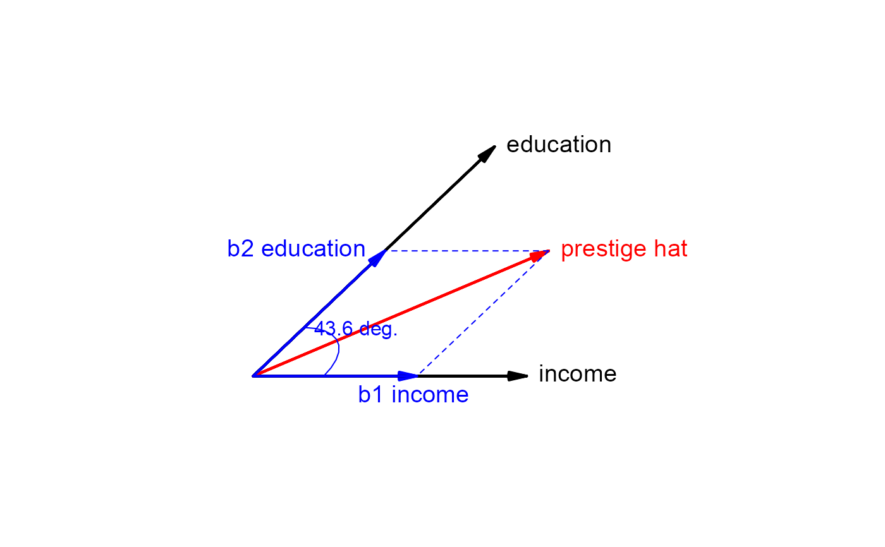
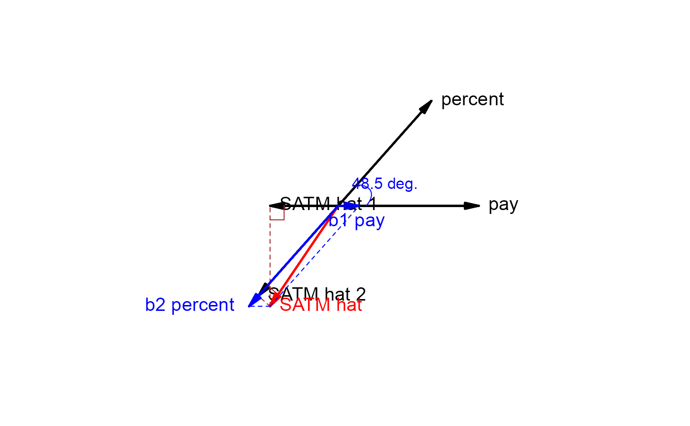

The plot method for regvec3d objects uses the low-level graphics tools in this package to draw 3D and 3D
vector diagrams reflecting the partial and marginal
relations of y to x1 and x2 in a bivariate multiple linear regression model,
lm(y ~ x1 + x2).
The summary method prints the vectors and their vector lengths, followed by the summary
for the model.
# S3 method for regvec3d plot( x, y, dimension = 3, col = c("black", "red", "blue", "brown", "lightgray"), col.plane = "gray", cex.lab = 1.2, show.base = 2, show.marginal = FALSE, show.hplane = TRUE, show.angles = TRUE, error.sphere = c("none", "e", "y.hat"), scale.error.sphere = x$scale, level.error.sphere = 0.95, grid = FALSE, add = FALSE, ... ) # S3 method for regvec3d summary(object, ...) # S3 method for regvec3d print(x, ...)
| x | A “regvec3d” object |
|---|---|
| y | Ignored; only included for compatibility with the S3 generic |
| dimension | Number of dimensions to plot: |
| col | A vector of 5 colors. |
| col.plane | Color of the base plane in a 3D plot or axes in a 2D plot |
| cex.lab | character expansion applied to vector labels. May be a number or numeric vector corresponding to the the
rows of |
| show.base | If |
| show.marginal | If |
| show.hplane | If |
| show.angles | If |
| error.sphere | Plot a sphere (or in 2D, a circle) of radius proportional to the length of
the residual vector, centered either at the origin ( |
| scale.error.sphere | Whether to scale the error sphere if |
| level.error.sphere | The confidence level for the error sphere, applied if |
| grid | If |
| add | If |
| ... | Parameters passed down to functions [unused now] |
| object | A |
None
A 3D diagram shows the vector y and the plane formed by the predictors,
x1 and x2, where all variables are represented in deviation form, so that
the intercept need not be included.
A 2D diagram, using the first two columns of the result, can be used to show the projection
of the space in the x1, x2 plane.
The drawing functions vectors and link{vectors3d} used by the plot.regvec3d method only work
reasonably well if the variables are shown on commensurate scales, i.e., with
either scale=TRUE or normalize=TRUE.
Fox, J. (2016). Applied Regression Analysis and Generalized Linear Models, 3rd ed., Sage, Chapter 10.
Other vector diagrams:
Proj(),
arc(),
arrows3d(),
circle3d(),
corner(),
pointOnLine(),
regvec3d(),
vectors3d(),
vectors()
if (require(carData)) { data("Duncan", package="carData") dunc.reg <- regvec3d(prestige ~ income + education, data=Duncan) plot(dunc.reg) plot(dunc.reg, dimension=2) plot(dunc.reg, error.sphere="e") summary(dunc.reg) # Example showing Simpson's paradox data("States", package="carData") states.vec <- regvec3d(SATM ~ pay + percent, data=States, scale=TRUE) plot(states.vec, show.marginal=TRUE) plot(states.vec, show.marginal=TRUE, dimension=2) summary(states.vec) }#>#> x y z length #> income 0.7754622 0.0000000 0.0000000 0.7754622 #> education 0.6842863 0.6509930 0.0000000 0.9444785 #> prestige 0.8378014 0.3553340 0.4145197 1.0000000 #> residuals 0.0000000 0.0000000 0.4145197 0.4145197 #> prestige hat 0.8378014 0.3553340 0.0000000 0.9100403 #> b1 income 0.4642947 0.0000000 0.0000000 0.4642947 #> b2 education 0.3735067 0.3553340 0.0000000 0.5155284 #> prestige hat 1 0.8378014 0.0000000 0.0000000 0.8378014 #> prestige hat 2 0.6172234 0.5871929 0.0000000 0.8519156 #> #> Call: #> lm(formula = formula, data = Data) #> #> Residuals: #> Min 1Q Median 3Q Max #> -29.538 -6.417 0.655 6.605 34.641 #> #> Coefficients: #> Estimate Std. Error t value Pr(>|t|) #> (Intercept) -6.06466 4.27194 -1.420 0.163 #> income. 0.59873 0.11967 5.003 1.05e-05 *** #> education. 0.54583 0.09825 5.555 1.73e-06 *** #> --- #> Signif. codes: 0 '***' 0.001 '**' 0.01 '*' 0.05 '.' 0.1 ' ' 1 #> #> Residual standard error: 13.37 on 42 degrees of freedom #> Multiple R-squared: 0.8282, Adjusted R-squared: 0.82 #> F-statistic: 101.2 on 2 and 42 DF, p-value: < 2.2e-16 #>#> x y z length #> pay 1.0000000 0.0000000 0.000000 1.0000000 #> percent 0.6630098 0.7486108 0.000000 1.0000000 #> SATM -0.4853306 -0.7164880 0.501098 1.0000000 #> residuals 0.0000000 0.0000000 0.501098 0.5010980 #> SATM hat -0.4853306 -0.7164880 0.000000 0.8653905 #> b1 pay 0.1492295 0.0000000 0.000000 0.1492295 #> b2 percent -0.6345601 -0.7164880 0.000000 0.9570901 #> SATM hat 1 -0.4853306 0.0000000 0.000000 0.4853306 #> SATM hat 2 -0.5689615 -0.6424199 0.000000 0.8581495 #> #> Call: #> lm(formula = formula, data = Data) #> #> Residuals: #> Min 1Q Median 3Q Max #> -29.697 -13.788 0.701 9.988 42.961 #> #> Coefficients: #> Estimate Std. Error t value Pr(>|t|) #> (Intercept) 513.6990 16.9174 30.365 < 2e-16 *** #> pay. 0.9718 0.6292 1.545 0.129 #> percent. -1.3743 0.1387 -9.906 3.45e-13 *** #> --- #> Signif. codes: 0 '***' 0.001 '**' 0.01 '*' 0.05 '.' 0.1 ' ' 1 #> #> Residual standard error: 17.68 on 48 degrees of freedom #> Multiple R-squared: 0.7489, Adjusted R-squared: 0.7384 #> F-statistic: 71.58 on 2 and 48 DF, p-value: 3.947e-15 #>